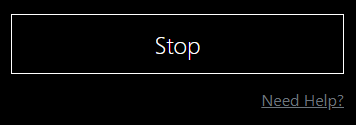

Build Fractals
Build mandelbrot fractal with different colors.
Using Build Fractals tool you can build Mandelbrot Set with different color palette and number of iterations. You also can zoom fractal by clicking on the point you whant to zoom with your mouse. Let's talk about all functions available and how do they work.
Build Fractal Menu
Change number of Iterations
The program has to do some computation to decide whether a point belongs to the mandelbrot set. The Number of Iterations setting tells how much work it will do before giving up and making decision. The more iterations are performed, the more accurate the drawing will be. We recommend to set from 25 to 100 iterations.
Change color palette
In order to add some colors, we could associate a color for each possible value of iterations. In this tool, we are switching from RGB colors to HSL (hue, saturation, lightness) colors. This allows us to change the color easily by modifying only the hue. The colors in the images are arbitrary. The set of colors that are used is called the "palette". Using Color picker you can choose outer and inner color of madelbrot set.
Zoom
After you drawed Mandelbrot Set you can click on it to zoom in. The point where you clicked will be moved to the center of the image and fractal will be scaled by 2 times. As you zoom, you might need to increase number of iterations.
Change Color Model
See transition from one color model to another.
A color model is a system that helps us to define and describe colors through numerical values. Using Color Model tool you can change color models of your image between RGB, CMYK and HSL. Is is also available tp change lightness in HSL color model.
Change Color Model Menu
Import Image
To change different color models you need to import Image you want to work with. You can either load image from your computer or import from URL link (currently unavailable).
Change color model
In Color model tool 3 color models are available: RGB (Red, Green, Blue), CMYK (Cyan, Magenta, Yellow, Black) and HSL (Hue, Saturation, Lightness). You can change them by clicking on color model you want to see. Program will calculate every pixel of your image and change it color model.
Zoom
The HSL model is very similar to the RGB color model. The difference lies in how colors are expressed numerically.
The hue determines which basic color it is. Saturation and luminance tell more about the variations of these basic colors. Finally, lightness refers to the "whiteness" of the color. It may also be termed "brightness", "value" or "intensity." By draging ligtness slider you can change the lightness in your image. It works only using HSL color model.
Move Shapes
Moving shapes using affine transformation.
Affine transformation is a linear mapping method that preserves points, straight lines, and planes. Sets of parallel lines remain parallel after an affine transformation. The affine transformation technique is typically used to correct for geometric distortions or deformations that occur with non-ideal camera angles. Move Shapes tool alows you to move and rotate square using affine transformations.
Affine Transformation Menu
Form a Square
To build a shape you should give two diagonally opposite points A(x, y) and C(x, y) of a square. Program will find out the other two points in terms of the known coordinates using this formulas

Change shape color
Using color picker you can change shape color.
Stop Image

After starting square movement using "Start" button you can use same button to Stop movement in any postion.